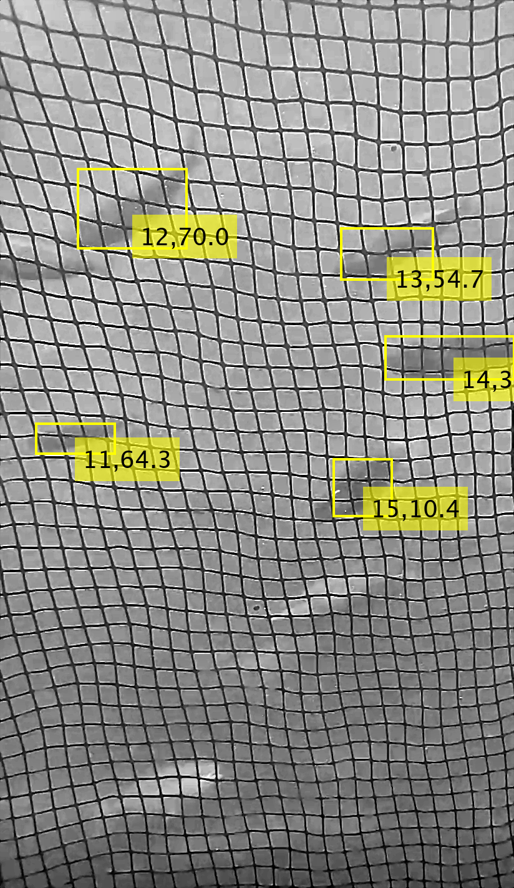

I'm a junior student studying computer science at the University of Notre Dame
A flight booking and management system for the Notre Dame Marching Band, coordinating travel for football bowl games and managing group flight logistics.
GitHub page Our demo video!Android app that scans nearby BLE devices, displays RSSI strength, supports background scanning, and notifies users when beacons are in range.
GitHub pageMATLAB-based motion tracking system using contrast enhancement and blob analysis to detect and track fish in video.
GitHub page